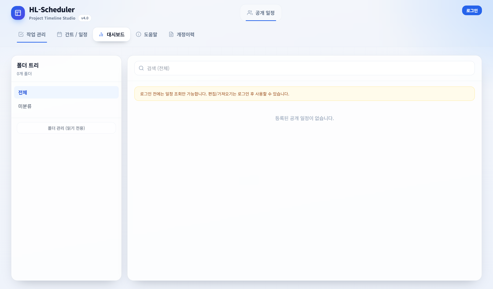
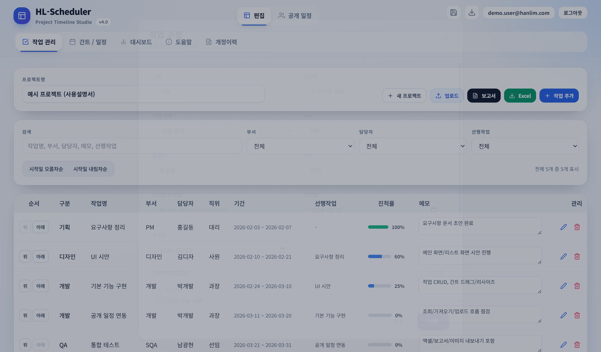
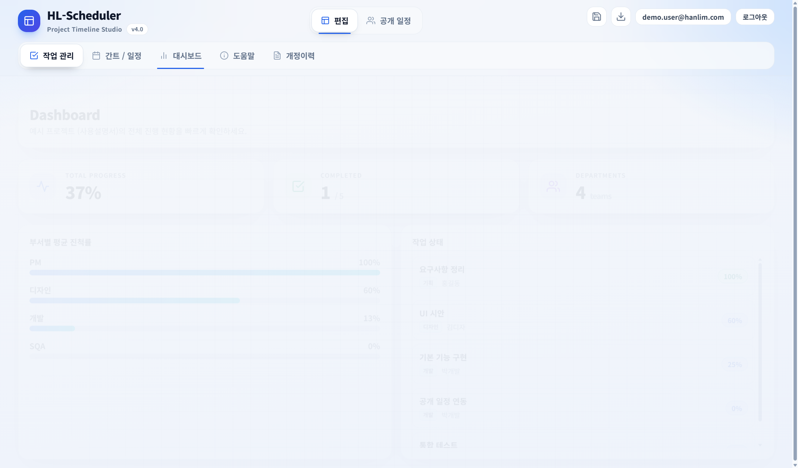
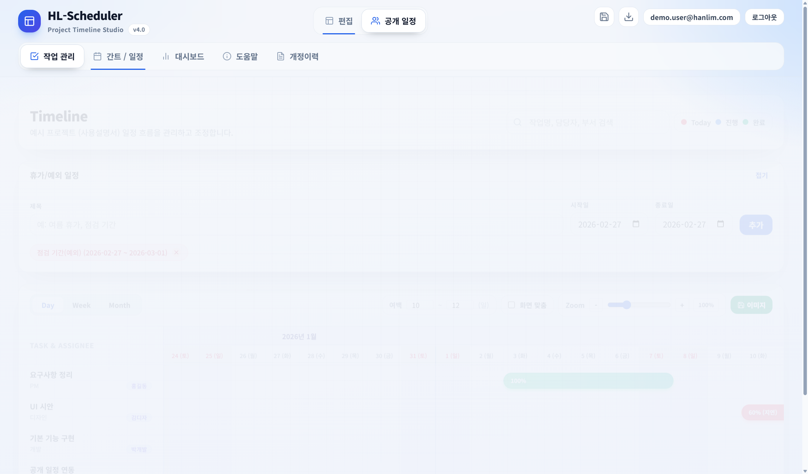

HL-Scheduler 초보자용 사용설명서
이 문서는 HL-Scheduler(일정/업무 스케줄러)를 처음 사용하는 분을 위해, 화면 구조 → 기본 개념 → 실제 작업 흐름 순서로 아주 자세하게 설명합니다.
참고: 일부 기능(로그인, 공개 일정, 업로드/업데이트, 폴더/사용자 관리)은 서버 설정/권한에 따라 화면이 다르게 보일 수 있습니다.
1. 프로그램 개요
HL-Scheduler는 프로젝트의 작업(Task)들을 입력하고, 간트(Gantt) 차트로 일정 흐름을 한눈에 보며 관리할 수 있는 도구입니다. 휴가/점검처럼 일정에서 제외해야 하는 기간도 함께 표시할 수 있고, 문서/엑셀/이미지로 내보내기를 지원합니다.
1.1 주요 기능 한눈에 보기
- 작업 관리: 작업 추가/수정/삭제, 담당자/부서/진척률, 메모 관리
- 의존성(선행작업): 선행작업이 끝난 다음날부터 후행작업이 시작되도록 자동 일정 밀기
- 간트/일정: Day/Week/Month 보기, 드래그로 이동/기간 조정, 확대/축소(Zoom)
- 휴가/예외 일정: 간트 위에 “제외 기간”을 오버레이로 표시
- 공개 일정: 다른 사용자가 업로드한 일정을 검색/미리보기/가져오기(권한 필요)
- 내보내기: Word 보고서(.doc), Excel(.xlsx), 간트 이미지(PNG/JPG)
- 백업/복원: 프로젝트(JSON) 저장 및 불러오기
1.2 이런 상황에 특히 유용합니다
- 프로젝트 일정/업무를 “표 형태”와 “간트”로 동시에 관리하고 싶을 때
- 회의/보고용으로 일정 스냅샷(이미지/Word/Excel)을 빠르게 만들어야 할 때
- 여러 부서/담당자가 섞인 일정에서 필터로 필요한 작업만 추려야 할 때
- 선행작업 관계가 있는 일정에서, 후행작업이 앞당겨져 실수하는 것을 막고 싶을 때
1.3 (중요) 데이터 저장/공유 방식 요약
HL-Scheduler는 기본적으로 내 PC(또는 브라우저)에 작업 데이터를 저장합니다. 즉, 다른 PC로 자동 동기화되지 않습니다.
- 개인 저장: 앱이 자동 저장(로컬 저장소)
- PC 이동/복구: JSON 백업 파일로 “저장 → 다른 PC에서 불러오기”
- 팀 공유: 공개 일정에 업로드(승인 계정 필요)
“가져오기/불러오기”는 현재 작업 데이터를 덮어쓰는 동작입니다. 큰 변경 전에 백업을 먼저 해두는 습관을 권장합니다.
2. 설치/실행 (EXE / 웹)
2.1 데스크톱(EXE) 버전
- 배포받은
Scheduler-4.0.exe(또는 유사한 이름)의 파일을 실행합니다. - Windows 보안 경고가 뜨면 “추가 정보 → 실행”을 선택해야 할 수 있습니다(회사 정책에 따라 다름).
- 실행 후 프로그램 상단의 로그인 버튼을 통해 승인된 계정으로 로그인합니다.
EXE 버전은 설치 없이 실행되는 포터블 형태로 배포될 수 있습니다. 컴퓨터를 옮길 때는 파일만 복사하면 실행 자체는 가능하지만, 작업 데이터는 자동으로 따라가지 않습니다. (→ 13장 백업/복원 참고)
2.2 웹(Web) 버전
- 사내에서 제공하는 HL-Scheduler URL로 접속하여 사용합니다.
- 웹/EXE 버전은 화면과 사용법이 거의 동일하지만, 저장/다운로드 동작이 브라우저 정책에 따라 달라질 수 있습니다.
2.3 EXE vs 웹 버전 차이(사용자 관점)
| 항목 | EXE(데스크톱 앱) | 웹 |
|---|---|---|
| 이미지 저장 | 저장 위치를 선택하는 “파일 저장” 창이 뜰 수 있음 | 브라우저 다운로드로 저장(다운로드 폴더/정책에 따름) |
| 앱 확대/축소 | 상단에 앱 Zoom(예: 100%) 컨트롤이 표시될 수 있음 | 브라우저 자체 확대/축소에 의존 |
| 데이터 저장 | PC 사용자별 로컬 저장소(자동 저장) | 브라우저 로컬 저장소(자동 저장) |
2.4 네트워크가 필요한 기능
- 로그인/가입 요청
- 공개 일정 조회/미리보기
- 공개 일정 업로드/업데이트
3. 로그인/권한 (승인/관리자)
HL-Scheduler는 권한에 따라 할 수 있는 기능이 다릅니다. 아래는 프로그램 내부 안내에 기반한 기본 규칙입니다.
3.1 권한 유형
| 유형 | 가능한 작업 | 대표 화면 |
|---|---|---|
| 비로그인 | 공개 일정 조회/검색/미리보기 | 공개 일정 탭 |
| 승인 사용자 | 편집(작업/휴가), 가져오기, 업로드/업데이트, 내보내기 | 편집 탭 + 공개 일정 탭 |
| Admin | 승인 사용자 기능 + 폴더/사용자 승인 관리 | 관리자 패널(편집 상단) |
3.2 로그인 화면 예시

3.3 가입 요청(승인 절차)
- 상단 로그인 버튼을 클릭합니다.
- 상단 탭에서 가입 요청을 선택합니다.
- 이메일(ID)과 비밀번호(최소 8자)를 입력합니다.
- 요청이 접수되면 관리자(Admin)가 승인 후 로그인이 가능합니다.
3.4 로그인 방법
- 상단 로그인 버튼을 클릭합니다.
- 로그인 탭에서 이메일(ID)과 비밀번호를 입력합니다.
- 로그인에 성공하면 상단에 로그인 사용자 이메일이 표시되고, 권한에 따라 “편집” 탭이 활성화됩니다.
계정이 “승인 대기(pending)” 상태이면 로그인/편집이 제한될 수 있습니다. 가입 요청 후 Admin 승인이 필요합니다.
3.5 로그아웃
- 상단 우측의 로그아웃 버튼을 누르면 로그아웃됩니다.
- 로그아웃 후에는 공개 일정 조회만 가능합니다.
3.6 로그인 후 기본 화면(일반 사용자 / Admin)
- 일반 승인 사용자: 로그인 후 기본적으로 “공개 일정” 탭으로 이동할 수 있습니다. 편집이 필요하면 “편집” 탭을 선택하세요.
- Admin: 관리자 기능(사용자 승인/폴더 관리)이 함께 표시될 수 있습니다.
4. 화면 구성 이해하기
HL-Scheduler는 크게 상단 헤더와 콘텐츠 영역으로 구성됩니다. 상단에서 탭 전환/백업/로그인 등을 수행하고, 하단에서 각 기능 화면을 사용합니다.
4.1 상단 헤더(메뉴) 구성
| 위치 | 이름/기능 | 초보자 팁 |
|---|---|---|
| 상단 탭 | 편집 / 공개 일정 | 편집 탭이 보이지 않으면 로그인/승인이 필요합니다. |
| 상단 아이콘 | 백업(JSON) 저장 / 불러오기(JSON) | 가져오기/불러오기는 덮어쓰기이므로, 중요한 변경 전 백업을 먼저 권장합니다. |
| 상단(데스크톱 앱) | 앱 확대/축소(예: 100%) | 글씨가 작으면 앱 Zoom을 올리고, 간트 확대는 화면 내 Zoom(간트 탭)을 사용하세요. |
| 상단 우측 | 로그인 / 로그아웃 | 로그인 후 승인된 계정이면 편집/업로드 기능이 활성화됩니다. |
편집 탭에 들어오면 아래와 같은 하위 메뉴(탭)를 사용할 수 있습니다: 작업 관리, 간트 / 일정, 대시보드, 도움말, 개정이력.
4.2 공개 일정(조회) 화면 예시

4.3 공개 일정 미리보기 화면 예시

4.4 편집 화면(간트/일정) 예시

5. 핵심 개념 (프로젝트/작업/휴가/의존성)
5.1 프로젝트(Project)
- 하나의 프로젝트는 프로젝트명, 작업 목록, 휴가/예외 일정, 그리고 보기 설정(여백/화면 맞춤/Zoom)으로 구성됩니다.
- 프로젝트는 기본적으로 내 PC(또는 브라우저)의 저장소에 저장됩니다.
- 중요한 프로젝트는 수시로 JSON 백업을 권장합니다.
5.2 작업(Task)
작업은 일정의 “막대(Bar)” 하나에 해당합니다. 입력 항목은 다음과 같습니다.
| 항목 | 설명 | 초보자 팁 |
|---|---|---|
| 구분 | 업무 유형/단계(예: 기획, 개발, QA) | 프로젝트 전체 분류 체계를 먼저 정해두면 보고서/엑셀에서 정리가 쉬워집니다. |
| 작업명 | 작업의 이름 | 가능하면 “동사 + 목적어”(예: API 연동, UI 시안 작성) 형태로 명확하게 작성 |
| 부서/담당자/직위/이메일 | 작업 책임자 정보 | 사원 선택 기능을 이용하면 이메일/직위 등이 자동 입력될 수 있습니다. |
| 시작일/종료일 | 작업 기간 | 종료일이 시작일보다 빠르면 자동 보정되거나 경고가 표시됩니다. |
| 선행작업(의존성) | 이 작업이 시작되기 전에 끝나야 하는 작업 목록 | 의존성을 연결하면 일정이 자동으로 “밀릴” 수 있습니다(5.4 참고). |
| 진척률 | 0~100% | 대시보드/보고서의 전체 진척률은 작업들의 평균으로 계산됩니다. |
| 메모 | 상세 내용, 이슈, 링크 등 | 업로드/엑셀/보고서에는 메모가 포함되므로, 공유 전 정리하면 좋습니다. |
참고: 작업 기간은 시작일과 종료일을 모두 포함합니다(예: 2026-03-02 ~ 2026-03-02 = 1일). Excel 내보내기의 “기간(일)”도 이 기준으로 계산됩니다.
- 사원 선택을 사용하면 담당자/부서/직위/이메일 입력이 빨라집니다.
- 선행작업(의존성)은 “작업명”이 아니라 내부적으로 작업 ID로 연결됩니다(화면에는 작업명이 보이지만, 데이터상 연결 키는 ID).
- 의존성은 중복/자기 자신/존재하지 않는 ID는 자동으로 정리됩니다.
5.3 휴가/예외 일정
- 휴가/예외 일정은 “작업이 진행되지 않는 기간”을 간트에 표시하기 위한 보조 데이터입니다.
- 간트 위에 색상 오버레이로 표시되어 회의/리뷰 시 판단이 쉬워집니다.
휴가/예외 일정은 기본적으로 “표시(오버레이)” 목적입니다. 자동으로 작업을 휴가 기간 뒤로 밀어주지는 않으므로, 필요한 경우 간트에서 직접 조정하세요.
5.4 선행작업(의존성)과 자동 일정 밀기
HL-Scheduler는 작업에 선행작업을 설정하면 후행작업이 선행작업 종료일 + 1일 이후에 시작하도록 자동으로 날짜를 보정합니다.
예시
- T-1(요구사항 정리) 종료일이 2/7이면, T-2가 T-1에 의존할 때 T-2의 가장 빠른 시작일은 2/8입니다.
- 여러 선행작업이 있으면, 그중 가장 늦게 끝나는 선행작업 기준으로 다음날부터 시작합니다.
의존성 순환(사이클)이 있으면 자동 일정 밀기에서 제외됩니다. 화면 상단에 경고가 표시되면, 순환에 포함된 작업의 선행작업을 정리해서 사이클을 제거하세요.
6. 초보자 빠른 시작(10분)
- 공개 일정 탭에서 검색 → 프로젝트를 선택 → 미리보기로 간트 흐름을 확인합니다.
- 편집이 필요하면 미리보기 화면에서 가져오기를 눌러 편집 모드로 불러옵니다.
- 간트/일정에서 막대를 드래그하여 날짜를 조정하고, 필요하면 휴가/예외 일정을 추가합니다.
- 작업 관리로 이동해 작업명/담당자/메모를 정리하고, Excel로 1차 공유합니다.
- 정식 보고가 필요하면 보고서 → Word 다운로드를 실행합니다.
- 다른 사용자에게 공유하려면 업로드로 공개 일정에 게시(또는 업데이트)합니다.
- 작업 전/후로 백업(JSON)을 저장하여 데이터 유실에 대비합니다.
6.1 시나리오 A: 공개 일정을 가져와 수정 후 “업데이트”까지
- 공개 일정 → 미리보기 → 가져오기(덮어쓰기 확인)
- 편집(간트/일정)에서 드래그로 날짜 조정 + 휴가/예외 일정 반영
- 작업 관리에서 메모/진척률 정리
- 보고서로 Word(.doc) 다운로드
- 공유 원본이 있는 경우 업로드 → 기존 일정 업데이트로 갱신
6.2 시나리오 B: 새 프로젝트를 만들고 팀에 공유(업로드)
- 편집 → 작업 관리에서 새 프로젝트로 초기화(필요 시)
- 작업 추가로 작업들을 등록(구분/작업명은 필수)
- 간트/일정에서 기간을 드래그로 맞추고, 선행작업을 설정해 흐름 정리
- Excel로 1차 공유(필터 적용 가능)
- 업로드로 공개 일정에 게시(폴더/제목 선택)
7. 공개 일정 탭 사용법
공개 일정은 사내(또는 팀)에서 공유되는 프로젝트 일정을 모아두는 공간입니다. 비로그인 상태에서도 조회가 가능하지만, 가져오기/편집/업로드는 승인된 계정만 가능합니다.
7.1 목록에서 일정 찾기
- 좌측 폴더에서 범위를 선택합니다(서버가 폴더 트리를 지원할 때).
- 상단 검색창에서 키워드를 입력합니다.
- 목록에서 원하는 일정을 클릭하면 미리보기로 이동합니다.
7.2 미리보기에서 확인할 것
- 작업 수와 전체 기간(간트 표시 범위)
- Day/Week/Month 보기로 일정의 “밀도” 확인
- 필터로 특정 부서/담당자 작업만 보기
- 필요 시 Zoom 조정
7.3 목록 항목 읽는 법(자주 보는 정보)
- 작업 N개: 해당 일정에 포함된 작업 수
- 수정/등록 시각: 최신 업데이트 시간(또는 최초 등록 시간)
- 게시자/수정자 이메일: 누가 올렸고(게시자), 누가 마지막으로 수정했는지(수정자)
7.4 폴더 기능(있을 때/없을 때)
- 서버가 폴더 트리를 지원하면 좌측에 폴더 목록이 보이고, 폴더별로 일정을 조회할 수 있습니다.
- 폴더 생성/삭제/이동은 Admin 권한이 필요합니다(일반 사용자는 읽기 전용).
7.5 “가져오기” 버튼이 비활성화되는 경우
- 비로그인 상태(또는 승인되지 않은 계정)에서는 조회/미리보기만 가능하고, 가져오기/편집은 제한됩니다.
- 이 경우 로그인 후 다시 시도하세요.
8. 가져오기(Import)와 편집 흐름
공개 일정 미리보기에서 가져오기를 누르면, 해당 일정이 편집 모드로 로드됩니다. 주의: 가져오기는 현재 편집 중인 데이터(작업/휴가)를 덮어씁니다.
가져오기 전에 작업 중인 프로젝트가 있다면 먼저 백업(JSON)을 저장하세요. (→ 13장 참고)
8.1 “가져오기”와 “프로젝트 불러오기(JSON)”의 차이
| 기능 | 출처 | 용도 | 주의 |
|---|---|---|---|
| 가져오기 | 공개 일정(서버) | 공유된 일정을 편집용으로 불러오기 | 현재 편집 데이터 덮어쓰기 |
| 프로젝트 불러오기 | 내 PC의 JSON 파일 | 백업해둔 프로젝트를 복원 | 현재 편집 데이터 덮어쓰기 |
8.2 가져오기(공개 일정) 기본 절차
- 공개 일정 → 미리보기 화면으로 이동
- 가져오기 클릭
- 덮어쓰기 확인 창에서 가져오기를 한 번 더 클릭
- 편집 화면으로 자동 이동(보통 간트/일정 탭)
가져오기 후에는 해당 일정이 “원본(공유) 일정”으로 연결되어, 업로드 화면에서 업데이트 대상 ID가 추천으로 표시될 수 있습니다.
8.3 새 프로젝트 만들기(초기화)
- 작업 관리에서 새 프로젝트를 누르면 작업/휴가/보기 설정이 초기화됩니다.
- 실수 방지를 위해 확인 창이 뜹니다.
8.4 편집 흐름에서 자주 하는 실수
- 덮어쓰기: 가져오기/불러오기 전에 백업을 안 해둬서 되돌릴 수 없는 경우
- 병합 불가: 현재 버전은 두 프로젝트를 “합치기”보다는 “교체” 흐름에 가깝습니다. 필요한 작업은 복사/재입력이 필요할 수 있습니다.
9. 작업 관리 탭 사용법

9.0 화면 상단 버튼(무슨 버튼을 언제 누르나요?)
| 버튼 | 언제 사용? | 결과 |
|---|---|---|
| 새 프로젝트 | 완전히 새로 시작할 때 | 작업/휴가/보기 설정 초기화(확인창 표시) |
| 업로드 | 팀에 공유(게시)하거나 기존 게시물을 갱신할 때 | 공개 일정에 업로드/업데이트(권한/서버 필요) |
| 보고서 | 회의/보고용 문서가 필요할 때 | Word(.doc) 보고서 생성(작업 상세 + 간트 이미지) |
| Excel | 리스트를 빠르게 공유/정리할 때 | 현재 “표시 중인 작업(필터 결과)” 기준으로 .xlsx 생성 |
| 작업 추가 | 새 작업을 입력할 때 | 작업 추가 모달 열기 |
9.1 프로젝트명 입력
- 프로젝트명은 보고서/엑셀/백업 파일명에 자동으로 포함됩니다.
- 처음부터 정확히 입력하면 산출물 관리가 쉬워집니다.
9.2 작업 추가
- 작업 추가 버튼을 클릭합니다.
- 구분, 작업명을 입력합니다(필수).
- 사원 선택/부서/담당자/직위/이메일을 입력합니다.
- 시작일/종료일을 지정합니다.
- 선행작업(의존성)이 있으면 체크합니다.
- 진척률과 메모를 입력 후 저장합니다.

9.3 작업 편집/삭제
- 목록 오른쪽의 연필 아이콘으로 수정, 휴지통 아이콘으로 삭제합니다.
- 삭제는 확인 창이 뜹니다.
9.4 검색/필터/정렬
- 검색: 작업명/부서/담당자/메모/선행작업까지 포함해 필터링합니다.
- 부서/담당자: 전체/미입력/특정 값 필터 지원
- 선행작업: 있음/없음으로 필터
- 시작일 정렬: 오름차순/내림차순
9.5 순서(행) 이동
- 각 행의 위/아래 버튼으로 작업의 표시 순서를 바꿀 수 있습니다.
- 간트 차트의 행 순서에도 영향을 줍니다.
- 검색/필터가 켜진 상태에서는 “현재 보이는 목록” 기준으로 이동할 수 있으니, 정렬이 의도대로인지 확인하세요.
9.6 메모를 빠르게 입력/수정하는 방법(인라인 편집)
- 작업 목록의 메모 칸은 표에서 바로 입력할 수 있습니다(모달을 열지 않아도 됨).
- 입력 후 다른 곳을 클릭해 포커스가 빠져나가면 저장됩니다.
팁: 긴 메모를 붙여넣은 뒤에는 한 번 다른 칸을 클릭해 저장이 반영되었는지 확인하세요.
9.7 내보내기 기준(Excel vs Word 보고서)
- Excel: 현재 화면에 “표시 중인 작업(필터 적용 결과)” 기준으로 내보내기 되는 경우가 많습니다.
- Word 보고서: 프로젝트 “전체 작업” 기준으로 생성되는 흐름입니다(보고서 미리보기 안내 문구 참고).
10. 간트/일정 탭 사용법
간트/일정 탭은 작업을 “시간축” 위에서 조정하는 핵심 화면입니다. 초보자는 이 화면에서 날짜를 먼저 맞춘 뒤, 작업 관리에서 세부 정보를 채우는 흐름이 가장 쉽습니다.
10.0 검색(필터) 사용법
- 상단 검색창에 키워드를 입력하면 해당 키워드가 포함된 작업만 간트에 표시됩니다.
- 일반적으로 작업명/부서/담당자/직위/이메일 기반으로 필터링됩니다.
- 이미지 내보내기(전체 차트)는 현재 필터 결과 기준으로 저장됩니다.
색상 안내(범례): Today 기준선, 진행(파란색), 완료(초록색)이 표시됩니다. 휴가/예외 일정은 오버레이로 표시됩니다.
10.1 휴가/예외 일정 추가
- 휴가/예외 일정 패널을 펼칩니다.
- 제목/시작일/종료일을 입력하고 추가를 누릅니다.
- 추가된 항목은 “뱃지” 형태로 표시되며, X 버튼으로 삭제할 수 있습니다.
- 시작일은 필수이며, 종료일은 비워두면 시작일과 동일하게 처리됩니다.
- 종료일이 시작일보다 빠르면 경고가 표시되고 추가되지 않습니다.
10.2 Day / Week / Month 보기
- Day: 날짜 단위로 가장 상세합니다(긴 프로젝트는 좌우 스크롤이 많아질 수 있음).
- Week: 주 단위로 적당히 압축되어 가장 많이 사용합니다.
- Month: 월 단위로 큰 흐름을 보기 좋습니다.
10.3 여백/화면 맞춤/Zoom
- 여백: 표시 범위를 앞/뒤로 넓힙니다(회의용 캡처 시 유용).
- 화면 맞춤: 화면 폭에 맞춰 간트를 자동으로 압축합니다.
- Zoom: 25%~300% 확대/축소, 각 보기 모드별로 별도 저장됩니다.
- 여백 단위는 보기 모드에 따라 달라집니다(Day=일, Week=주, Month=월).
- 화면 맞춤이 켜져 있으면 시간축이 화면 폭에 맞춰지므로 가로 스크롤이 줄어듭니다(필요 시 Zoom을 사용).
Day 보기 범위가 너무 길면(예: 365일 초과) 화면 맞춤이 자동 비활성화될 수 있습니다. 이때는 Week/Month로 전환하거나 여백을 줄이세요.
10.4 간트에서 드래그로 일정 이동/기간 조정
- 막대를 드래그하면 작업 전체가 이동합니다.
- 막대의 좌/우 끝을 드래그하면 시작일/종료일을 조정할 수 있습니다.
- 마우스 휠로 세로 스크롤, Shift + 휠로 가로(시간축) 스크롤이 가능합니다.
- 선행작업(의존성)이 설정된 작업은 날짜를 조정했을 때 자동 일정 밀기 규칙에 의해 다시 보정될 수 있습니다.
- 드래그가 잘 안 된다면 로그인/승인 상태와 편집 권한을 먼저 확인하세요.
11. 대시보드 탭 사용법

11.1 지표 해석
- Total Progress: 전체 작업 진척률의 평균(반올림)
- Completed: 100% 완료된 작업 수
- Departments: 부서(팀) 종류 수
추가로 알아두면 좋은 점
- 부서가 비어 있는 작업은 통계에서 “미지정”으로 묶여 표시될 수 있습니다.
- 진척률 평균은 작업 수가 많을수록 “전체적인 체감”과 다르게 보일 수 있으니, 완료/지연 작업 목록도 함께 확인하세요.
12. 내보내기(Word/Excel/이미지)
12.1 간트 이미지(PNG/JPG) 저장

- 간트/일정 화면 우측 상단의 이미지 버튼을 클릭합니다.
- PNG/JPG, 범위(전체/현재 보이는 화면), 해상도(Scale)를 선택합니다.
- 필요하면 Today 표시 포함 여부와 파일명을 설정하고 저장하기를 클릭합니다.
| 옵션 | 의미 | 추천 |
|---|---|---|
| 파일 형식 | PNG(선명) / JPG(용량 절감) | 문서/보고용은 PNG 권장 |
| 내보내기 범위 | 전체 차트(현재 필터 기준) / 현재 보이는 화면 | 차트가 너무 크면 “현재 보이는 화면” |
| 해상도(Scale) | x1~x4(높을수록 선명하지만 파일이 커짐) | 기본 x2~x3, 실패하면 x1 |
| Today 표시 | 오늘 기준선을 이미지에 포함 | 진행 상황 공유 시 켜기 |
| 파일명 | 비워두면 자동 생성 | 회의 자료용이면 날짜/버전 포함 추천 |
이미지가 너무 크면 저장이 실패할 수 있습니다. 이때는 범위를 “현재 보이는 화면”으로 바꾸거나 Scale을 낮춰 다시 시도하세요.
12.2 Word 보고서(.doc) 생성

- 작업 관리에서 보고서 버튼을 클릭합니다.
- Day/Week/Month 중 원하는 간트 보기 모드를 선택합니다.
- Word 보고서 다운로드를 클릭합니다.
- 다운로드된
.doc파일을 Word로 열어 필요하면 서식을 보정합니다.
보고서에 포함되는 내용(기본 구성)
- 프로젝트 요약: 작성일, 전체 진척률, 총 작업 수, 완료 작업 수
- 작업 상세 표: 구분/작업명/부서/담당자/기간/선행작업/진척률
- 간트 타임라인 이미지: 선택한 보기 모드(Day/Week/Month) 기준으로 캡처
팁: 보고서에서 간트가 너무 길게 나올 때는 Week 또는 Month로 보기 모드를 바꾼 뒤 다시 생성해보세요. 다운로드된 파일은 Word에서 다른 이름으로 저장(.docx)하여 재배포할 수 있습니다.
12.3 Excel(.xlsx) 내보내기
- 작업 관리에서 Excel 버튼을 클릭합니다.
- 현재 화면에 “표시 중인 작업(필터 적용 결과)” 기준으로 내보내기가 됩니다.
- 엑셀 파일에는 일반적으로 작업목록/휴가일정/요약 시트가 포함됩니다.
시트/컬럼 구성(기본)
- 작업목록: 구분, 작업명, 부서, 담당자, 시작일, 종료일, 기간(일), 진척률(%), 선행작업, 메모
- 휴가일정: 휴가명, 시작일, 종료일
- 요약: 프로젝트명, 내보낸 날짜, 총 작업 수, 완료 작업 수, 전체 진척률(%), 휴가 건수
“필터를 걸고 Excel을 내보내면” 필터된 작업만 추출됩니다. 전체 작업을 내보내려면 필터를 해제한 뒤 다시 내보내세요.
13. 백업/복원 (JSON)
상단 헤더의 저장(백업) 아이콘은 현재 프로젝트를 JSON 파일로 저장합니다. 복원(불러오기) 시에는 현재 작업 데이터가 가져온 데이터로 교체됩니다.
13.1 백업(저장) 권장 상황
- 대량 수정/정렬/의존성 변경 전
- 업로드/업데이트 전(공유 전에 “되돌릴 지점” 확보)
- PC 교체/이동 전
13.2 복원(불러오기) 시 주의
불러오기는 현재 작업/휴가/보기 설정을 덮어씁니다. 불러오기 전에 백업을 먼저 해두세요.
13.3 백업 파일에 포함되는 항목
- 프로젝트명
- 작업 목록(작업명/기간/진척률/메모/선행작업 등)
- 휴가/예외 일정
- 보기 설정(여백/화면 맞춤/Zoom 등)
13.4 불러오기 제한(초보자가 자주 놓치는 부분)
- JSON 파일만 불러올 수 있습니다.
- 파일이 너무 크면 불러오기가 제한될 수 있습니다(예: 10MB 제한).
- 작업/휴가가 너무 많으면 가져오기/업로드 제한이 걸릴 수 있습니다(예: 작업 5000개, 휴가 2000개 등).
- 종료일이 시작일보다 빠른 데이터는 자동으로 보정될 수 있습니다.
13.5 JSON 구조(예시)
{
"name": "예시 프로젝트",
"tasks": [
{
"id": "T-1",
"category": "기획",
"taskName": "요구사항 정리",
"department": "PM",
"assignee": "홍길동",
"start": "2026-02-03",
"end": "2026-02-07",
"progress": 100,
"dependencies": []
}
],
"vacations": [{ "title": "점검", "start": "2026-02-27", "end": "2026-03-01" }]
}15. 관리자 기능(폴더/사용자 승인)
Admin 계정은 일반 승인 사용자 기능에 더해, 폴더 관리와 사용자 승인 관리를 수행할 수 있습니다. (화면 상단에 관리자 패널이 표시됩니다.)
15.1 사용자 승인 관리
- 승인 대기(pending) 사용자를 조회하여 승인/거절
- 필요 시 임시 비밀번호로 초기화
자주 쓰는 상태값
- pending: 승인 대기
- approved: 승인 완료
- rejected: 거절
- disabled: 비활성
15.2 폴더 관리
- 폴더 생성/삭제
- 일정의 폴더 이동
일반 사용자는 공개 일정 화면에서 “폴더 관리(읽기 전용)”로 표시될 수 있으며, 실제 생성/삭제는 Admin만 가능합니다.
16. 문제 해결(FAQ)
Q1. “편집” 탭이 안 보여요.
A. 비로그인 또는 비승인 계정이면 공개 일정 조회만 가능합니다. 로그인 후에도 편집이 안 된다면 관리자 승인 상태를 확인하세요.
Q2. 가져오기 했더니 기존 작업이 사라졌어요.
A. 가져오기는 덮어쓰기 동작입니다. 복구하려면 이전에 저장한 JSON 백업을 불러오세요.
Q3. “의존성 순환이 감지되었습니다” 경고가 떠요.
A. A→B, B→C, C→A처럼 순환 구조가 생긴 경우입니다. 순환에 포함된 작업은 자동 일정 밀기에서 제외됩니다. 작업들의 선행작업을 재정리하여 사이클을 제거하세요.
Q4. 이미지 내보내기가 실패해요.
A. 차트가 너무 크거나(특히 Day/전체 범위 + 고화질) PC 성능/브라우저 제한으로 실패할 수 있습니다. “현재 보이는 화면”으로 내보내거나 Scale을 낮추고 다시 시도하세요.
Q5. 저장이 안 되는 것 같아요.
A. 브라우저/PC 정책으로 로컬 저장소 접근이 제한되면, 새로고침 시 변경이 사라질 수 있습니다. 상단 경고 메시지를 확인하고, 중요 작업은 반드시 JSON 백업을 남기세요.
Q6. “가져오기/편집 기능은 로그인 후 사용할 수 있습니다.”라고 떠요.
A. 공개 일정은 누구나 “조회”할 수 있지만, 가져오기(편집으로 불러오기)와 편집 기능은 로그인 후에만 사용할 수 있습니다. 로그인 버튼을 눌러 로그인하고, 편집 탭이 활성화되는지 확인하세요.
Q7. “승인된 계정만 편집/업로드를 사용할 수 있습니다.”라고 떠요.
A. 가입은 되었지만 계정 상태가 승인 대기(pending)이면 편집/업로드가 제한됩니다. 관리자(Admin)에게 승인 요청을 해주세요.
Q8. “공개 일정 서버가 설정되어 있지 않습니다. (VITE_PUBLIC_SCHEDULES_API_BASE)” 경고가 떠요.
A. 공개 일정(조회/검색) 기능은 서버 주소 설정이 필요합니다. 현재 실행 환경(웹/EXE)에 서버 주소가 설정되어 있지 않은 상태입니다. 공개 일정이 반드시 필요하다면 관리자/담당자에게 서버 설정을 요청하세요. (이 경우에도 로컬 편집/백업/내보내기 기능은 사용할 수 있습니다.)
Q9. “공개 일정 쓰기 서버가 설정되어 있지 않습니다. (VITE_PUBLIC_SCHEDULES_WRITE_API_BASE)”라고 떠요.
A. 조회 서버는 설정되어 있어도, 업로드/업데이트(쓰기) 서버가 없으면 공유 등록을 할 수 없습니다. 공개 일정을 “검색/미리보기”까지만 가능하고, 업로드/업데이트는 관리자에게 쓰기 서버 설정을 요청해야 합니다.
Q10. 업로드/업데이트 중 “다른 사용자가 먼저 일정을 수정했습니다”라고 떠요.
A. 같은 공개 일정을 다른 사람이 먼저 업데이트하여, 내 데이터가 최신 버전이 아니게 된 경우입니다. 공개 일정에서 최신 버전을 다시 가져오기한 뒤 변경사항을 반영하고 다시 업데이트하세요.
Q11. 업로드 중 “업로드 데이터 크기가 서버 제한을 초과했습니다”라고 떠요.
A. 업로드/업데이트는 서버에서 허용하는 데이터 크기 제한(약 1MB)이 있습니다. 작업/휴가 수가 많거나, 메모가 길면 쉽게 커질 수 있습니다. 메모 내용을 정리하거나, 프로젝트를 분리해서 업로드해 보세요.
Q12. 가져오기에서 “파일이 손상되었거나 JSON 형식이 올바르지 않습니다.”라고 떠요.
A. 파일이 유효한 JSON 형식이 아니거나(쉼표/따옴표 오류), 인코딩 문제가 있을 수 있습니다. 메모장 대신 VS Code 같은 편집기로 열어 JSON 문법 오류가 없는지 확인하세요. (가져오기는 .json 파일만 지원합니다.)
Q13. 간트에서 “일정 미지정/일정 오류”로 표시돼요.
A. 작업의 시작일/종료일이 비어 있거나 날짜 형식이 올바르지 않으면 간트가 표시되지 않습니다. 작업 관리에서 해당 작업을 열어 YYYY-MM-DD 형식으로 시작/종료일을 지정하세요.
Q14. “종료일이 시작일보다 빠른 데이터…를 자동으로 보정했습니다.”라고 나와요.
A. 가져오기/불러오기 시 종료일이 시작일보다 앞선 데이터가 있으면, 프로그램이 자동으로 시작일/종료일을 서로 바꿔 정상 범위로 보정합니다. 보정된 작업/휴가를 작업 관리에서 한 번 확인하세요.
Q15. Excel/보고서/이미지 내보내기가 실패해요.
A. 작업 수가 많거나, Day/전체 범위/고배율(Scale) 설정은 내보내기 처리량을 크게 늘립니다. 먼저 Week/Month 보기로 바꾸거나, “현재 보이는 화면”으로 내보내기, Scale을 낮추는 방식으로 시도해 보세요.
부록 A. 단축키/마우스 조작
HL-Scheduler는 복잡한 단축키보다는 마우스 조작(드래그/휠) 중심으로 설계되어 있습니다. 아래는 초보자가 가장 자주 사용하는 조작만 정리한 표입니다.
A.1 간트/일정 화면 조작
| 구분 | 조작 | 동작/결과 | 주의/팁 |
|---|---|---|---|
| 스크롤 | 마우스 휠 | 작업 목록을 위/아래로 스크롤 | 간트가 길어도 세로 스크롤은 항상 가능합니다. |
| 가로 이동 | Shift + 마우스 휠 | 간트를 좌/우로 스크롤(가로 이동) | “화면 맞춤(Fit)”이 켜져 있으면 가로 스크롤이 제한될 수 있습니다. |
| 이동(드래그) | 작업 막대(바)를 드래그 | 시작/종료일을 함께 이동 | 1칸(컬럼) = 1일 단위로 이동합니다. |
| 기간 변경 | 막대 왼쪽 손잡이를 드래그 | 시작일 변경(앞/뒤로) | 종료일보다 뒤로는 늘릴 수 없으며, 최소 1일을 유지합니다. |
| 기간 변경 | 막대 오른쪽 손잡이를 드래그 | 종료일 변경(앞/뒤로) | 시작일보다 앞으로는 줄일 수 없으며, 최소 1일을 유지합니다. |
| 화면 확대 | 브라우저: Ctrl + 마우스 휠 | 페이지(앱) 전체 확대/축소 | 간트 확대는 간트 탭의 Zoom을, 글씨 크기는 앱 확대(상단) 또는 브라우저 확대를 사용하세요. |
A.2 자주 하는 조작 팁
- 가로로 화면이 답답하면: 여백(범위)의 before/after를 줄이고, 필요할 때만 키우세요.
- 가로 스크롤이 안 된다면: 화면 맞춤(Fit)이 켜져 있는지 확인하세요.
- 의존성이 있는 프로젝트에서 드래그 후 날짜가 다시 움직이면: 자동 일정 밀기 규칙(선행작업)을 먼저 점검하세요.
부록 B. 데이터 형식(백업/가져오기)
HL-Scheduler는 프로젝트를 JSON으로 백업/복원할 수 있고, 공개 일정에서 가져온 데이터도 같은 형식으로 처리합니다. 아래는 백업 파일 구조와 “가져오기”가 이해하는 데이터 형식을 정리한 것입니다.
가져오기/불러오기는 현재 데이터를 덮어쓰는 동작입니다. 먼저 백업(JSON)을 저장한 뒤 진행하세요.
B.1 지원하는 JSON 종류
| 형태 | 루트 JSON | 설명 | 가져오기 후 |
|---|---|---|---|
| 작업 배열 | [ ... ] |
작업(Task)만 있는 간단 형식 | 프로젝트명/휴가/보기 설정은 초기화됩니다. |
| 프로젝트 객체 | { "name": "...", "tasks": [...], "vacations": [...] } |
백업과 동일한 “전체 프로젝트” 형식 | 프로젝트명/휴가/보기 설정까지 함께 복원됩니다. |
참고: 가져오기 파일은 최대 10MB, 작업은 최대 5000개, 휴가는 최대 2000개 까지 처리합니다(초과분은 자동으로 제외될 수 있습니다).
B.2 프로젝트(백업) JSON 구조
상단 “백업(JSON)” 버튼으로 저장되는 파일은 아래와 같은 형태입니다(보기 설정 포함).
{
"name": "프로젝트명",
"tasks": [ { "...": "..." } ],
"vacations": [ { "...": "..." } ],
"rangePadding": {
"Day": { "before": 15, "after": 15 },
"Week": { "before": 2, "after": 2 },
"Month": { "before": 1, "after": 1 }
},
"fitSettings": {
"Day": { "enabled": false },
"Week": { "enabled": false },
"Month": { "enabled": false }
},
"zoomSettings": { "Day": 100, "Week": 100, "Month": 100 }
}B.3 작업(Task) 객체 필드
| 필드 | 설명 | 비고(호환 입력) |
|---|---|---|
id |
작업의 고유 ID | 없으면 자동 생성, 중복이면 자동으로 새 ID 부여 |
category |
구분(예: Planning/Design) | UI에서 필수 입력(권장) |
taskName |
작업명 | UI에서 필수 입력(권장) |
department |
부서 | 선택 |
assignee |
담당자 | 선택 |
assigneeEmail |
담당자 이메일 | assignee_email도 인식 |
assigneePosition |
담당자 직위 | assignee_position, position도 인식 |
start |
시작일(YYYY-MM-DD) | actStart, planStart도 인식 |
end |
종료일(YYYY-MM-DD) | actEnd, planEnd도 인식(없으면 1일로 처리) |
progress |
진척률(0~100) | 범위를 벗어나면 자동으로 0~100으로 보정 |
memo |
메모 | note도 인식 |
dependencies |
선행작업 ID 목록 |
dependsOn, predecessors도 인식. 문자열이면 ,/;/줄바꿈으로 분리.
존재하지 않는 ID/중복/자기 자신은 자동 제거됩니다.
|
B.4 휴가/예외 일정 객체 필드
| 필드 | 설명 | 비고(호환 입력) |
|---|---|---|
id |
휴가 ID | 없으면 자동 생성 |
title |
휴가명(예: 연차, 설비점검) | name도 인식 |
start |
시작일(YYYY-MM-DD) | startDate도 인식 |
end |
종료일(YYYY-MM-DD) | endDate도 인식(없으면 시작일과 동일) |
B.5 제한/자동 보정 규칙(중요)
- 파일 크기: 최대 10MB (초과 시 가져오기 불가)
- 작업 수: 최대 5000개, 휴가 수: 최대 2000개 (초과분은 자동 제외)
- 업로드/업데이트 데이터 크기: 최대 약 1MB (초과 시 업로드 불가)
- 종료일이 시작일보다 빠른 경우: 자동으로 시작/종료일을 서로 교환하여 보정
- 의존성 목록: 존재하지 않는 ID/자기 자신/중복은 자동 제거되며, 순환(사이클)이 있으면 자동 일정 밀기에서 제외될 수 있습니다.
B.6 가져오기 예시(작업 배열)
[
{
"id": "T-1",
"category": "Planning",
"taskName": "요구사항 정리",
"department": "PM",
"assignee": "홍길동",
"start": "2026-03-01",
"end": "2026-03-03",
"progress": 20,
"memo": "초안 작성",
"dependencies": []
},
{
"id": "T-2",
"category": "Development",
"taskName": "개발",
"start": "2026-03-04",
"end": "2026-03-10",
"dependencies": ["T-1"]
}
]17. 문의
프로그램 사용 중 문의 사항은 아래 담당자에게 연락하세요.
SQA팀 남광현
이메일: nkh92@hanlim.com